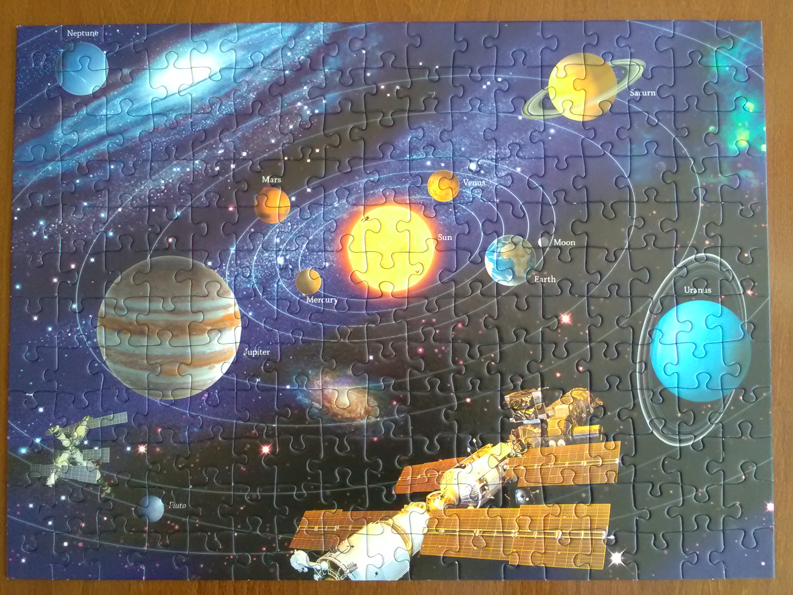

ou comment maîtriser au mieux ce qui n’est pas censé pouvoir l’être
Définition
l’univers noté \(\Omega\) est un ensemble de tous les éléments \(\omega\) représentant chacun une éventualité de l’expérience considérée
Idées importantes à retenir
- un évènement : ensemble d’éventualités
- la tribu \(\mathcal T\): ensemble de tous les événements d’une expérience donnée
Définition
une probabilité sur \(\Omega\) muni de la tribu \(\mathcal T\) est une fonction \(\mathbb P\) qui à tout évènement \(A\in\mathcal T\) associe un nombre \(\mathbb P(A)\in[0;1]\), telle que
- \(\mathbb P(\Omega)=1\) (l’univers est certain)
- si \(A_1,A_2,A_3,\dots\) suite d’éléments de \(\mathcal T\), deux à deux disjoints \((i\neq j\Rightarrow A_i \cap A_j=\emptyset)\), alors : \[\mathbb P( A_1 \cup A_2 \cup A_3 \cup \dots) = \mathbb P(A_1)+\mathbb P(A_2)+\mathbb P(A_3)+\dots\] (probabilité d’une réunion d’évènements disjoints/incompatibles égal à la somme des probabilités respectives des évènements)
Propriété
soit \(\mathbb P\) une probabilité sur \((\Omega, \mathcal T)\), et \(A,B\in\mathcal T\)
- \(\mathbb P(\emptyset) =0\)
- \(\mathbb P(\bar A) = 1-\mathbb P(A)\)
- \(\mathbb P(A\cup B) = \mathbb P(A) + \mathbb P(B) - \mathbb P(A\cap B)\) (Formule de Poincaré)
- si \(A\subset B,\quad \mathbb P(A)\leq \mathbb P(B)\)
Propriété
si \(\Omega=\{\omega_1,\dots,\omega_n\}\) est un univers fini. Pour définir une probabilité sur l’univers \(\Omega\), il faut et il suffit de définir une liste de nombres positifs \((p_1,\dots,p_n)\) telle que
- \(p_1+p_2+\dots+p_n=1\) (le total vaut 1)
- \(p_k=\mathbb P(\{\omega_k\})\) (les probabilités de chaque issue sont connues)
Définition
soient \(A\) et \(B\) deux événements tels que \(\mathbb P(B)\neq 0\), alors la probabilité conditionnelle de \(A\) sachant \(B\) est la quantité notée \(\mathbb P(A|B)\) définie par \[\mathbb P(A|B)=\frac{\mathbb P(A\cap B)}{\mathbb P(B)}\]

Définition
une famille d’événements non-vides \((A_1,\dots,A_n)\) forme une partition de \(\Omega\) si 1. \(\bigcup_{k=1}^n A_k = \Omega\) 2. \(A_i \cap A_j = \emptyset,\quad \forall i\neq j\)
Probabilités totales
soit \((A_1,\dots,A_n)\) une partition de \(\Omega\) alors pour tout événement \(B\) \[\mathbb P(B) = \sum_{k=1}^n \mathbb P(B|A_k)\mathbb P(A_k)\]
Formule de Bayes
sous les mêmes hypothèses \[\mathbb P(A_{k_0}|B) = \frac{\mathbb P(B|A_{k_0})\mathbb P(A_{k_0})}{\sum_{k=1}^n \mathbb P(B|A_k)\mathbb P(A_k)}\]
Définition
deux événements \(A\) et \(B\) sont indépendants si \[\mathbb P(A|B)=\mathbb P(A)\]
Propriété
soient \(A\) et \(B\) deux événements tels que \(\mathbb P(A),\mathbb P(B)\neq 0\), alors les assertions suivantes son équivalentes
- \(\mathbb P(A|B)=\mathbb P(A)\)
- \(\mathbb P(A|\bar B)=\mathbb P(A)\)
- \(\mathbb P(A\cap B)=\mathbb P(A)\mathbb P(B)\)
- \(\mathbb P(B|A)=\mathbb P(B)\)